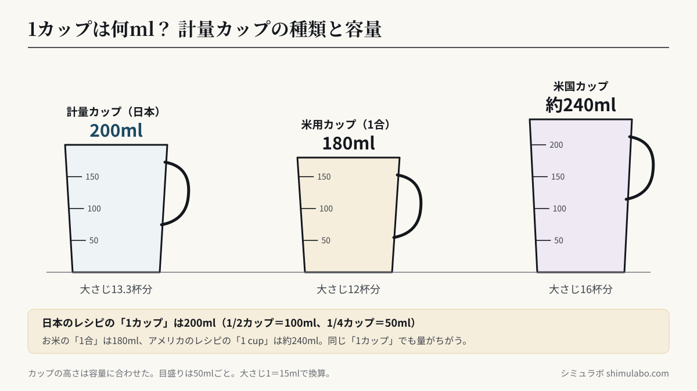
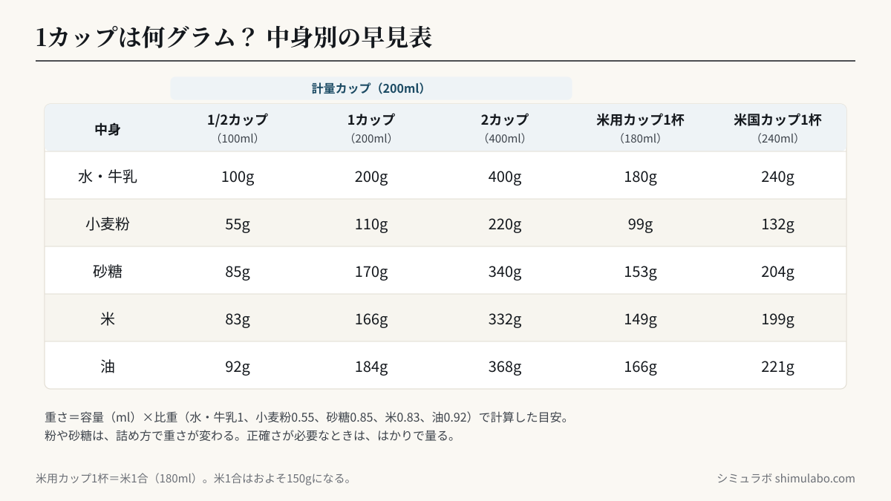

結論：日本の計量カップは 1カップ＝200ml。ただし米用カップは180ml（1合）、アメリカのカップは240mlと違うので注意。
カップの種類と容量
| 種類 | 容量 |
|---|---|
| 計量カップ（日本） | 200ml |
| 米用カップ（1合） | 180ml |
| 米国カップ | 約240ml |
重さは中身で変わります（小麦粉1カップ≒110g、砂糖1カップ≒170g）。






図はタップすると大きく表示されます。資料やSNSに使うときは、出典「シミュラボ」とページのURLを添えてください。
よくある質問
- 米1合は何カップ？
- 米用カップで1杯（180ml）です。計量カップ(200ml)とは違います。
- データは送信されますか？
- いいえ。計算はすべてブラウザ内で完結します。
参考
- 計量カップの容量（一般的な目安）